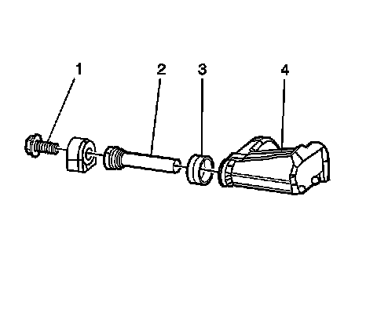

Disc Brake Mounting and Hardware Inspection - Rear (JL9, JE5)
Rear Disc Brake Mounting and Hardware Inspection (JL9, JE5)
Caution: Refer to Brake Dust Caution (Brake Dust Caution) .
1. Inspect the fluid level in the brake master cylinder reservoir.
2. If the brake fluid level is midway between the maximum-full point and the minimum allowable level, no brake fluid needs to be removed from the reservoir before proceeding.
3. If the brake fluid level is higher than midway between the maximum-full point and the minimum allowable level, remove brake fluid to the midway point before proceeding.
4. Install a large C-clamp, over the body of the brake caliper with the C-clamp ends against the rear of the caliper body and against the outer brake pad.
5. Tighten the C-clamp until the caliper piston is compressed into the caliper bore enough to allow the caliper to slide past the brake rotor.
6. Remove the C-clamp from the caliper.
7. Grasp the brake caliper and try to move the brake caliper up or down. The brake caliper should not have excessive looseness.
8. Grasp the brake caliper and try to move the brake caliper in and out. The brake caliper should slide smoothly with minimal force.

9. Inspect the brake caliper retainers.
10. Inspect the disc brake pad mounting hardware for the following:
* Bent mounting tabs
* Excessive corrosion
* Looseness at the brake caliper mounting bracket
* Looseness at the disc brake pads
* Missing mounting hardware
11. If any of the conditions listed are found, the disc brake pad mounting hardware requires replacement.
12. Ensure the disc brake pads are held firmly in place on the brake caliper mounting bracket, yet slide easily on the mounting hardware without binding.

13. Inspect the brake caliper bolts (1) for the following:
* Bent or damaged brake caliper bolts (1)
* Bent or damaged brake caliper mounting bracket (4)
* Binding
* Corrosion
* Looseness in the brake caliper mounting bracket (4)
* Seizing
14. If any of the conditions listed are found, the brake caliper mounting hardware requires replacement.
15. Inspect the brake caliper slides pins (2) by gently pulling outward, without disengaging the slides from the boot, then push inward, and observe for the following:
* Bent or damaged brake caliper bolts (1)
* Bent or damaged brake caliper mounting bracket (4)
* Binding
* Corrosion
* Cracked or torn boots (3)
* Missing boots
* Looseness in the brake caliper mounting bracket (4)
* Seizing
16. If any of the conditions listed are found, the brake caliper mounting hardware requires replacement.